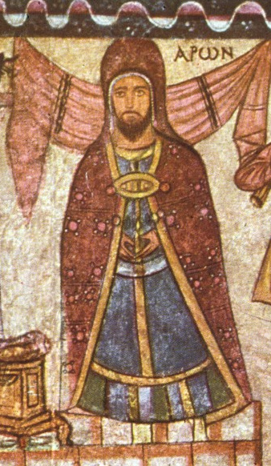

Dura-Europos Synagogue Murals

The wall paintings of a 3rd-century synagogue on the Euphrates frontier, uncovered in 1932 and removed to Damascus for preservation. Panels picture Moses at the Red Sea, Ezekiel's valley of dry bones, Esther, and Samuel anointing David — the oldest extensive cycle of biblical narrative art known. This entry covers the synagogue murals only; the separate Dura-Europos Church is a different building with its own entry.
Biblical Significance
Long before illustrated Bibles, a Jewish congregation painted its faith on the walls where it worshipped. The murals show that the stories Christians also treasure were already being pictured, taught, and prayed over in vivid colour within a century of the apostles.
Interpretations
Scholars agree the murals are 3rd-century synagogue art; debate concerns details of iconography, such as which figures represent which patriarchs, not the synagogue's identity or date.